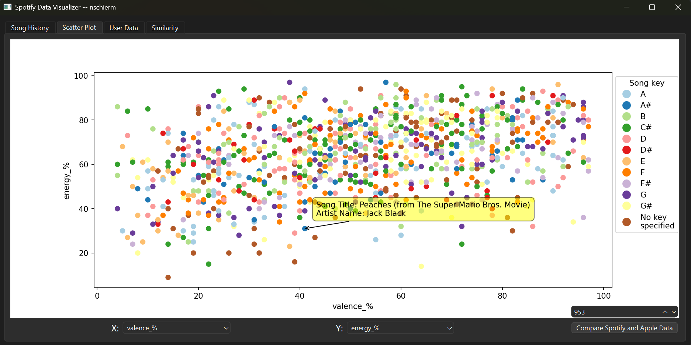

This project is all about different ways to visualize a user's Spotify listening history, as well as other statistics on songs streamed through spotify. There are 4 different components (tabs) to this project:
- A barchart that shows the cumulative number of streams for all songs in a given year
- A scatterplot that allows users to change attributes to see how songs relate to certain categories
- Barcharts for a user's own spotify data, allowing them to see their most popular tracks and artists
- A linechart that again allows users to visualize different attributes to see how they relate
Yearly Barchart
For this tab, the min and max years are adjustable, which allows you to key in on a specific group of time. Hovering your mouse over one of the bars will allow you to see which specific year it is, the number of streams all songs on Spotify had in that year, and the most popular artist (by number of streams) for that year. From this, there is a large growth in streams after 2010, which is likely due to that being when Spotify started to become popular.
Scatterplot

This tab allows a user to pick different attributes defined by Spotify and visualize them in a scatterplot. The songs are color-coded by key. The user can also adjust the number of songs presented to isolate the most popular songs.
The user can also visualize the difference in streams on Spotify vs Apple Music, and see which songs have more streams or are in more playlists on the two music streaming services.
User Data
This is the most exciting tab, where the user is able to look at their own Spotify data. The user can see which artists they listened to most by days of the week or months of the year, color-coded by artist.
Users can also look at their most-streamed artists, which is density color-coded by minutes listened. If a user hovers over an artist, they can see their most streamed song by that artist, or if they hover over a song, they can see who that song is performed by.
These are all the options a user can visualize. Note for the first 4, a user can also choose whether or not to include skipped tracks in the calculations (A skipped song is a song played for less than 30 seconds)
Linechart
This allows a user to see how closely related the different attributes created by Spotify are. They are able to change the order of the attributes to see different interactions. This is again color-coded by song key.